7 Waves
Progressive waves, transverse and longitudinal waves, the Doppler effect, the electromagnetic spectrum and polarisation
Learning objectives
By the end of this chapter, you should be able to:
- describe wave motion as illustrated by vibration in ropes, springs and ripple tanks;
- use the terms displacement, amplitude, phase difference, period, frequency, wavelength and speed;
- use the time-base and y-gain of a cathode-ray oscilloscope (CRO) to determine frequency and amplitude;
- derive and use the wave equation \(v=f\lambda\);
- understand that energy is transferred by a progressive wave;
- recall and use intensity \(=\text{power}/\text{area}\) and intensity \(\propto(\text{amplitude})^2\);
- compare transverse and longitudinal waves, and interpret graphical representations of both;
- understand the Doppler effect for sound and use \(f_o=f_s\dfrac{v}{v\pm v_s}\);
- state the regions of the electromagnetic spectrum and their wavelength ranges;
- understand polarisation and use Malus’s law \(I=I_0\cos^2\theta\).
7.1 Progressive waves
Wave motion
A progressive wave transfers energy from one place to another without transferring matter. Wave motion can be seen when a pulse travels along a stretched rope or spring, or across the surface of a ripple tank: each particle oscillates about a fixed position while the disturbance (the wave) moves on.
Key terms:
- Displacement \(x\) is the distance of a particle from its equilibrium position (measured in m).
- Amplitude \(A\) is the maximum displacement from equilibrium (m).
- Wavelength \(\lambda\) is the distance between two successive points oscillating in phase (m).
- Period \(T\) is the time for one complete oscillation (s).
- Frequency \(f\) is the number of complete oscillations per second (Hz), with \(f=1/T\).
- Phase difference is the fraction of a cycle between two points, usually measured in degrees or radians.
- Speed \(v\) is the distance travelled by the wave per unit time.
The wave equation
Since one wavelength is travelled in one period:
\[v=\frac{\lambda}{T}=f\lambda.\]
The wave equation can be derived from the definitions of speed, frequency and wavelength. It applies to all waves, including sound, light and water waves.
Energy and intensity
A progressive wave carries energy. The intensity of a wave is the power transmitted per unit cross-sectional area:
\[I=\frac{P}{A}.\]
For a progressive wave, the intensity is proportional to the square of the amplitude:
\[I\propto A^2.\]
Doubling the amplitude therefore quadruples the intensity.
Using a cathode-ray oscilloscope
On a CRO, the time-base controls the horizontal axis (time per division) and the y-gain controls the vertical axis (voltage or displacement per division).
- The period is read from the horizontal scale: count the time for one complete cycle.
- The amplitude is read from the vertical scale: the height of a peak above the centre line.
- The frequency is then \(f=1/T\).
7.2 Transverse and longitudinal waves
Comparing transverse and longitudinal waves
In a transverse wave, the particles vibrate perpendicular (at \(90^\circ\)) to the direction of energy transfer. Examples: waves on a rope, water waves, electromagnetic waves.
In a longitudinal wave, the particles vibrate parallel to the direction of energy transfer. The wave consists of compressions and rarefactions. Examples: sound waves in air, waves on a slinky spring.
Graphically, a transverse wave is drawn as a sine curve of displacement against distance; a longitudinal wave is represented by the same sinusoidal graph, where positive displacement means a compression and negative displacement a rarefaction.
Doppler effect for sound
When a source of sound moves relative to a stationary observer, the observed frequency differs from the emitted frequency:
\[f_o=f_s\frac{v}{v\pm v_s},\]
where \(v\) is the speed of sound, \(v_s\) is the speed of the source and \(v_o=0\) for a stationary observer.
- Source moving towards the observer: waves bunch up, wavelength decreases, observed frequency increases (use the minus sign).
- Source moving away: waves spread out, wavelength increases, observed frequency decreases (use the plus sign).
7.3 The electromagnetic spectrum
Electromagnetic waves
All electromagnetic waves:
- are transverse waves;
- travel at the same speed \(c=3.0\times10^8\ \mathrm{m\,s^{-1}}\) in free space;
- transfer energy without needing a medium.
From longest wavelength to shortest wavelength, the principal regions are:
radio waves, microwaves, infrared, visible light, ultraviolet, X-rays, gamma-rays.
The visible region is approximately 400–700 nm.
Wavelength ranges
| Region | Approximate wavelength |
|---|---|
| Radio | \(>10^{-1}\ \mathrm{m}\) |
| Microwaves | \(10^{-1}\) – \(10^{-3}\ \mathrm{m}\) |
| Infrared | \(10^{-3}\) – \(7\times10^{-7}\ \mathrm{m}\) |
| Visible | \(7\times10^{-7}\) – \(4\times10^{-7}\ \mathrm{m}\) |
| Ultraviolet | \(4\times10^{-7}\) – \(10^{-8}\ \mathrm{m}\) |
| X-rays | \(10^{-8}\) – \(10^{-13}\ \mathrm{m}\) |
| Gamma-rays | \(<10^{-13}\ \mathrm{m}\) |
For any region, \(c=f\lambda\), so the frequency ranges are found from \(\lambda=c/f\).
7.4 Polarisation
Polarisation
Polarisation is the process by which the oscillations of a transverse wave are made to occur in one plane only. It is a property of transverse waves only – longitudinal waves cannot be polarised because their particles vibrate parallel to the direction of travel.
An unpolarised wave vibrates in many planes perpendicular to the direction of travel. After passing through a polarising filter, the oscillations are restricted to a single plane.
Malus’s law
For plane-polarised light incident on a polarising filter (analyser), the transmitted intensity is
\[I=I_0\cos^2\theta,\]
where \(I_0\) is the intensity of the incident polarised light and \(\theta\) is the angle between the plane of polarisation of the light and the transmission axis of the filter.
When \(\theta=90^\circ\), no light is transmitted; when \(\theta=0^\circ\), all the light is transmitted. Note: the factor of \(\frac{1}{2}\) for unpolarised light passing through a first polariser is not part of Malus’s law.
Multiple Choice Questions
7.1 Waves: Transverse & Longitudinal - Easy
Example 1 · 7.1 MC Easy Q4
A sound wave has a displacement \(y\) at a distance \(x\) from its source at time \(t\).
Which graph shows correctly the amplitude \(a\) and the wavelength \(\lambda\) of the wave?
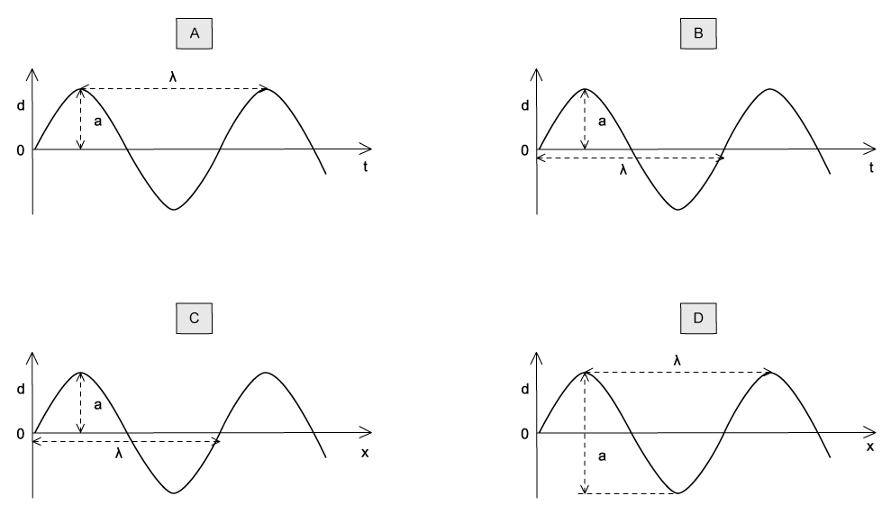
Show answer and explanation
Answer: C. The amplitude is the maximum displacement from the resting position, and the wavelength is the minimum distance between two points oscillating in phase. Options A and B show the time axis (which would give the period, not the wavelength), and D measures the displacement of a complete wave rather than from the resting position.Example 2 · 7.1 MC Easy Q6
The vertical cross-section diagram shows a water wave moving from left to right.
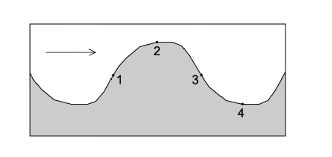
Which points on the diagram show the water moving upwards with maximum speed?
A. 1 and 3
B. 3 only
C. 1 and 4
D. 4 only
Show answer and explanation
Answer: B. Shifting the wave forward in the direction of travel, point 3 is the only point moving upwards with maximum speed. Point 1 moves downwards and point 4 moves upwards but not at maximum speed.Example 3 · 7.1 MC Easy Q8
The diagram below is a graph showing how the height of water at a point in a marina varies with time \(t\) as the waves pass the point.
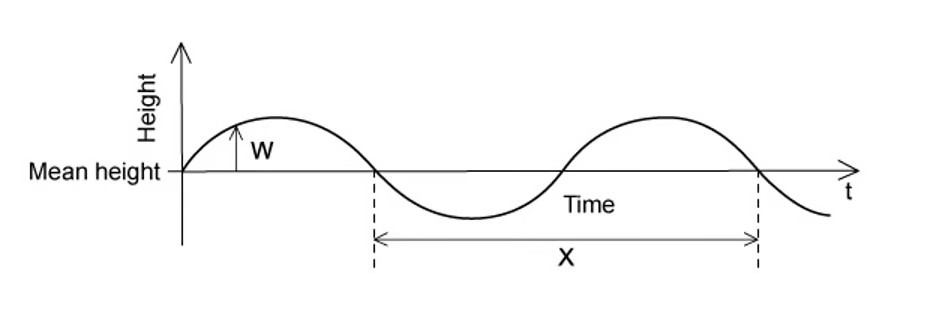
What is the correct label for W and X?
| W | X | |
|---|---|---|
| A | amplitude | period |
| B | displacement | wavelength |
| C | amplitude | wavelength |
| D | displacement | period |
Show answer and explanation
Answer: D. The x-axis is time, so X must be the period (a quantity measured in time, not distance). W is the displacement of the wave at that instant, not the maximum displacement.7.1 Waves: Transverse & Longitudinal - Medium
Example 4 · 7.1 MC Medium Q1
Sound travels with a speed of \(330\ \mathrm{m\,s^{-1}}\) in air. The variation with time of the displacement of an air particle due to a sound wave is shown below.
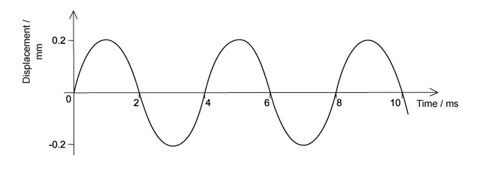
Which of the following statements about the wave is correct?
A. the wavelength of the sound wave is 1.32 m
B. the graph shows that the sound is a transverse wave
C. the frequency of the wave is 500 Hz
D. the intensity of the wave will be doubled if its amplitude is increased to 0.4 mm
Show answer and explanation
Answer: A. Two wavelengths take \(2T=8\ \mathrm{ms}\), so \(T=4\ \mathrm{ms}\) and \(f=1/T=250\ \mathrm{Hz}\). Then \(\lambda=v/f=330/250=1.32\ \mathrm{m}\). The graph is just a graphical representation of a periodic oscillation and is the same for both transverse and longitudinal waves. Doubling the amplitude quadruples the intensity, not doubles it.Example 5 · 7.1 MC Medium Q2
The graph shows two light waves travelling at the same frequency.
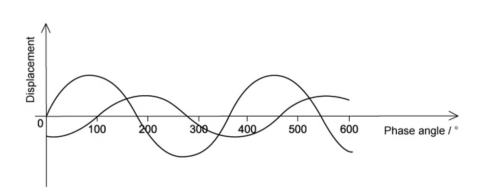
Which of the following could be the phase difference between the two waves?
A. 330°
B. 260°
C. 220°
D. 150°
Show answer and explanation
Answer: B. Treating the waves as sinusoidal starting at zero displacement, wave B first returns to zero displacement at a phase angle of 100°. One full cycle is 360°, so wave B is 100° − 360° = −260° relative to wave A, giving a phase difference of 260°.Example 6 · 7.1 MC Medium Q3
The diagram shows a wave moving along a stretched rope in the direction shown.
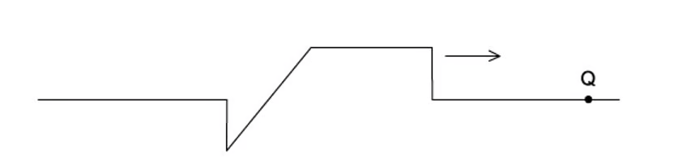
Which of the following will be the correct graph to show the variation with time \(t\) of the displacement \(s\) of the particle Q in the rope?
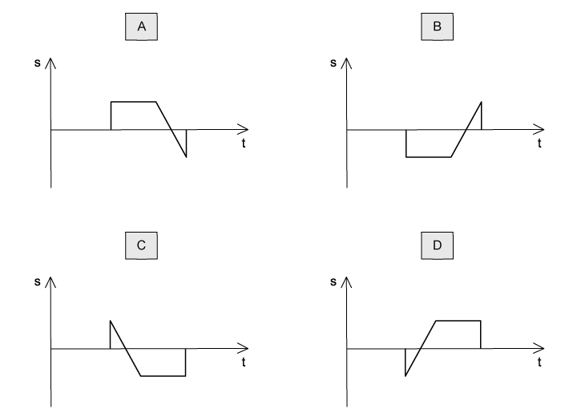
Show answer and explanation
Answer: A. The wave is transverse, so particle Q oscillates vertically. As the crest approaches, Q jumps up quickly, stays near the maximum displacement, and then returns through a negative peak as the trough passes.Example 7 · 7.1 MC Medium Q5
Plane-polarised light of amplitude \(A\) is passed through a polarising filter as shown in the diagram. The emerging light has an amplitude of \(A\cos\theta\).
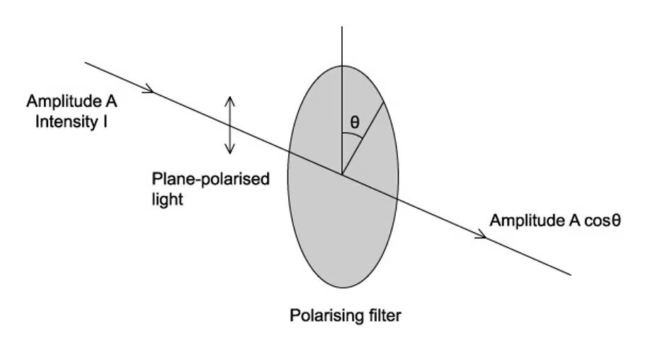
If the intensity of the beam is \(I\), what is the intensity of the emerging light when \(\theta\) is 60.0°?
A. 0.866\(I\)
B. 0.750\(I\)
C. 0.500\(I\)
D. 0.250\(I\)
Show answer and explanation
Answer: D. Intensity is proportional to the square of the amplitude, so \(I_{\text{out}}\propto(A\cos60°)^2=0.250A^2\propto0.250I\).Example 8 · 7.1 MC Medium Q7
What is the frequency, amplitude and period of the wave shown in the graph below, to 2 significant figures?
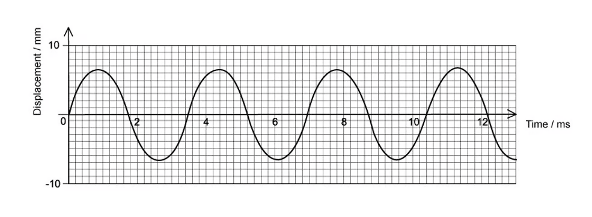
| Period / s | Frequency / Hz | Amplitude / m | |
|---|---|---|---|
| A | 0.0042 | 240 | 0.013 |
| B | 0.0035 | 290 | 0.0065 |
| C | 0.0031 | 320 | 0.013 |
| D | 0.0027 | 290 | 0.0065 |
Show answer and explanation
Answer: B. From the graph, 3.5 waves occupy 12.2 ms, so \(T=12.2\times10^{-3}/3.5=0.0035\ \mathrm{s}\), \(f=1/T=290\ \mathrm{Hz}\), and the amplitude read from the y-axis is 6.5 mm \(=0.0065\ \mathrm{m}\).Example 9 · 7.1 MC Medium Q9
A sound wave can be displayed on a cathode-ray oscilloscope (C.R.O.). The time base is set to \(5\ \mu\mathrm{s\,mm^{-1}}\).
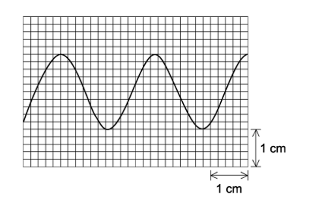
What is the frequency of the sound wave?
A. 83 Hz
B. 8.3 Hz
C. 83 kHz
D. 8.3 kHz
Show answer and explanation
Answer: D. Each division is 2 mm, so each division is 10 \(\mu\)s. 2.5 waves occupy 30 divisions, so \(2.5T=30\times10=300\ \mu\)s and \(T=120\ \mu\)s. Then \(f=1/(120\times10^{-6})=8333\ \mathrm{Hz}\approx8.3\ \mathrm{kHz}\).Example 10 · 7.1 MC Medium Q10
The graph shows the displacement of a sound wave over time.
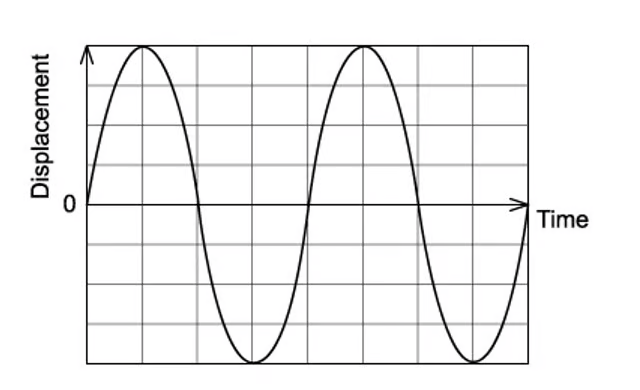
When the intensity of the wave is halved, which graph shows the correct displacement of the wave?
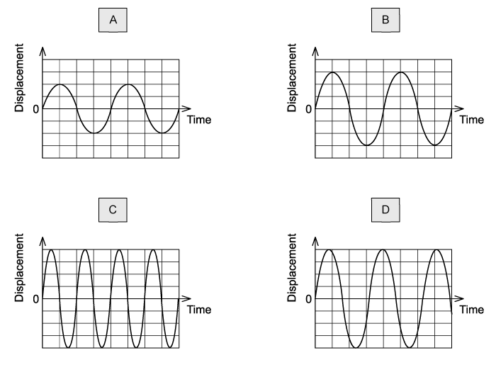
Show answer and explanation
Answer: B. Intensity is proportional to amplitude squared, so halving the intensity multiplies the amplitude by \(1/\sqrt2\approx0.71\). The frequency stays the same. Graph B shows the amplitude reduced by a factor of 0.71 with unchanged frequency.7.1 Waves: Transverse & Longitudinal - Hard
Example 11 · 7.1 MC Hard Q2
The graph shows two waves P and Q.
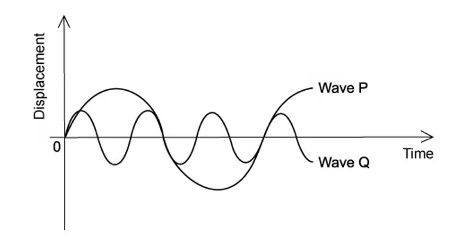
Wave P has an amplitude of 8 cm and a frequency of 100 Hz.
What is the amplitude and the frequency of wave Q?
| Amplitude / cm | Frequency / Hz | |
|---|---|---|
| A | 4 | 300 |
| B | 4 | 33 |
| C | 2 | 300 |
| D | 2 | 33 |
Show answer and explanation
Answer: A. Wave Q has half the amplitude of P, so 4 cm. In the time of one cycle of P, three cycles of Q occur, so \(f_Q=3\times100=300\ \mathrm{Hz}\).Example 12 · 7.1 MC Hard Q3
The graph below shows two sound waves, where the sound wave is a series of moving pressure variations.
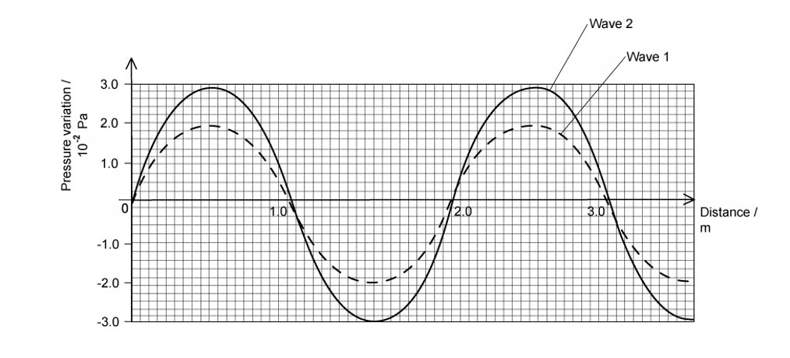
Wave 1 has an intensity of \(1.6\times10^{-6}\ \mathrm{W\,m^{-2}}\). What is the intensity of wave 2?
A. \(3.6\times10^{-6}\ \mathrm{W\,m^{-2}}\)
B. \(2.4\times10^{-6}\ \mathrm{W\,m^{-2}}\)
C. \(3.0\times10^{-6}\ \mathrm{W\,m^{-2}}\)
D. \(4.5\times10^{-6}\ \mathrm{W\,m^{-2}}\)
Show answer and explanation
Answer: A. Intensity is proportional to amplitude squared. From the graph, wave 1 has amplitude 2 units (\(I_1=4\) units) and wave 2 has amplitude 3 units (\(I_2=9\) units). So \(I_2=(9/4)\times1.6\times10^{-6}=3.6\times10^{-6}\ \mathrm{W\,m^{-2}}\).Example 13 · 7.1 MC Hard Q7
The intensity \(I\) of a sound at point Q is inversely proportional to the square of the distance \(x\) of Q from the source of the sound. This can be shown by the equation
\[I\propto\frac{1}{x^2}.\]
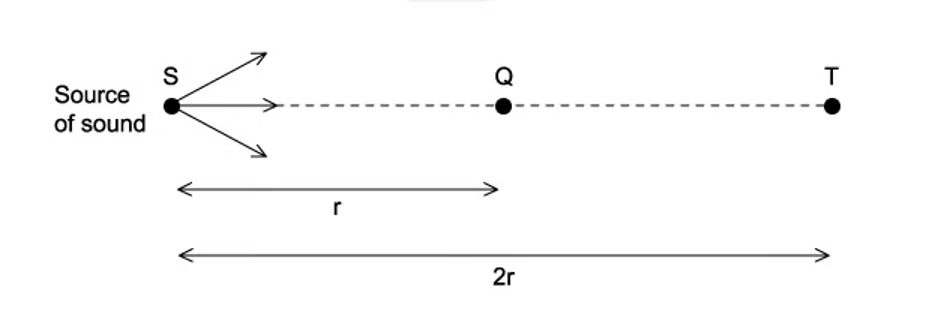
Molecules of air at Q are a distance \(r\) from S and oscillate with amplitude \(8.0\ \mu\mathrm{m}\).
Point T is a distance \(2r\) from S.
What is the amplitude of oscillation of air molecules at T?
A. 4.0 \(\mu\)m
B. 2.0 \(\mu\)m
C. 2.8 \(\mu\)m
D. 1.4 \(\mu\)m
Show answer and explanation
Answer: A. Doubling the distance quarters the intensity. Since \(I\propto A^2\), the amplitude is multiplied by \(\sqrt{1/4}=1/2\), giving \(A=8.0/2=4.0\ \mu\mathrm{m}\).Example 14 · 7.1 MC Hard Q8
The graph shows a sinusoidal wave in water, travelling at a speed of \(8.0\ \mathrm{m\,s^{-1}}\).
The maximum speed of the particles in the wave is \(2\pi af\), where \(a\) is the amplitude and \(f\) is the frequency.
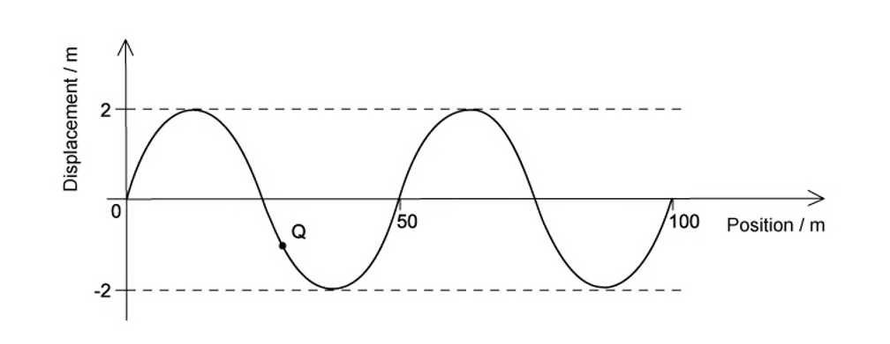
An object Q is floating on the water; it has a mass of \(2.5\times10^{-3}\ \mathrm{kg}\).
What is the maximum kinetic energy of Q due to the wave? Assume the motion is vertical.
A. 41 mJ
B. 5.1 mJ
C. 39 mJ
D. 64 mJ
Show answer and explanation
Answer: B. From the graph the wavelength is 50 m, so \(f=v/\lambda=8/50=0.16\ \mathrm{Hz}\), and the amplitude is 2 m. The maximum speed is \(v_{\max}=2\pi af=2\pi(2)(0.16)=0.64\pi\ \mathrm{m\,s^{-1}}\). Then \(E_K=\frac{1}{2}mv_{\max}^2=\frac{1}{2}(2.5\times10^{-3})(0.64\pi)^2=5.1\times10^{-3}\ \mathrm{J}=5.1\ \mathrm{mJ}\).7.2 Transverse Waves: EM Spectrum & Polarisation - Easy/Medium
Example 15 · 7.2 MC Easy Q8
The diagram shows part of the electromagnetic spectrum.
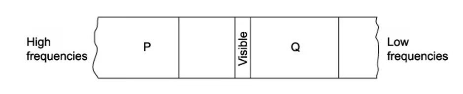
High frequencies \(\longrightarrow\) P \(\qquad\) Q \(\longleftarrow\) Low frequencies
Which row correctly labels the regions marked P and Q?
| P | Q | |
|---|---|---|
| A | infrared | x-ray |
| B | ultraviolet | x-ray |
| C | x-ray | infrared |
| D | infrared | microwaves |
Show answer and explanation
Answer: C. High-frequency end of the spectrum is X-rays (P), and the region next to the low-frequency end shown is infrared (Q).Example 16 · 7.2 MC Medium Q8
A linearly polarised electromagnetic beam has an intensity of \(16\ \mathrm{W\,m^{-2}}\) with an angle of incidence of 45° to the vertical.
What is the intensity of the transmitted beam?
A. 20 W m\(^{-2}\)
B. 12 W m\(^{-2}\)
C. 16 W m\(^{-2}\)
D. 8 W m\(^{-2}\)
Show answer and explanation
Answer: D. Using Malus’s law, \(I=I_0\cos^2\theta=16\cos^2 45°=16\times0.5=8\ \mathrm{W\,m^{-2}}\).Example 17 · 7.2 MC Medium Q9
Unpolarised light of intensity \(I_0\) is incident on a polariser with a vertical transmission axis. The transmitted light is incident on a sheet of material X. After transmission through X, the intensity of the light is \(I_0/2\).
It is suggested that X could be:
- a polariser with a vertical transmission axis;
- a polariser with a horizontal transmission axis;
- non-polarising glass.
A. 1 and 2
B. 2 and 3
C. 1 and 3
D. 3 only
Show answer and explanation
Answer: C. The first polariser reduces the unpolarised light by half (the half rule). Since the light is now vertically polarised, material X can be either another polariser with a vertical transmission axis or non-polarising glass – neither changes the intensity. A horizontal polariser would block the light completely.7.2 Transverse Waves: EM Spectrum & Polarisation - Hard
Example 18 · 7.2 MC Hard Q3
Unpolarised light of intensity \(I_0\) is incident on a polariser that has a vertical transmission axis, as shown in the diagram below.
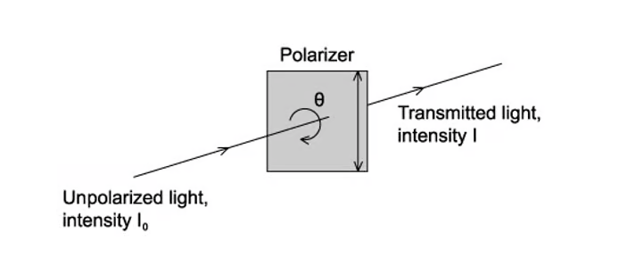
Which graph shows the intensity of the transmitted light?
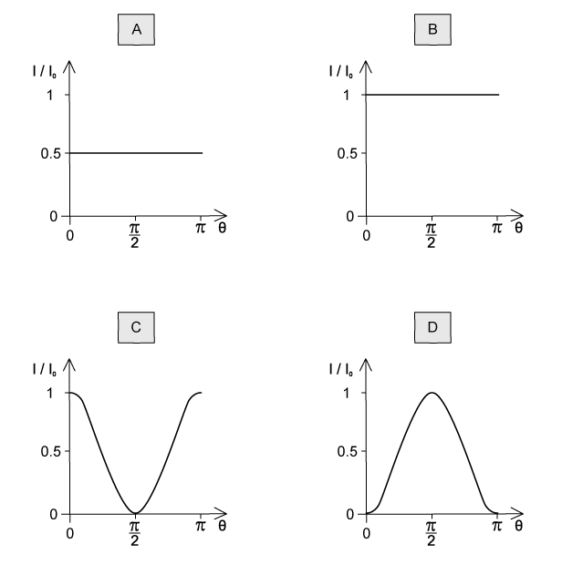
Show answer and explanation
Answer: A. Unpolarised light incident on a single polariser loses half its intensity regardless of the angle of the transmission axis, so the transmitted intensity is a constant \(I_0/2\). Only graph A shows this constant value.Example 19 · 7.2 MC Hard Q5
A person wearing polarising sunglasses stands at the edge of a pond in bright sunlight.
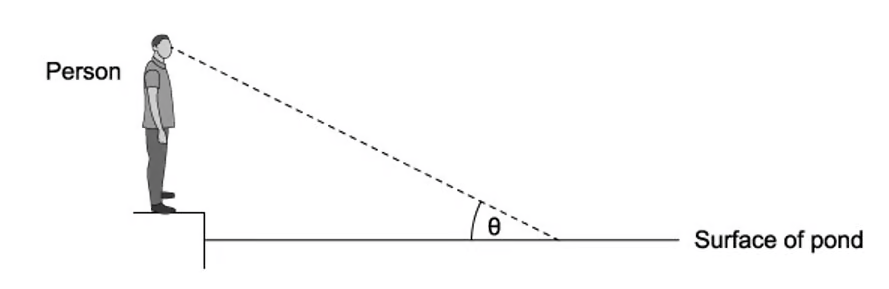
The surface of the pond is flat, and the person has a line of sight to the surface at angle \(\theta\). The refractive index of the pond water is \(n\).
What is the value of \(\theta\) for which the light would be a minimum when it reaches the person’s eye?
A. \(\tan^{-1}\left(\dfrac{1}{n}\right)\)
B. \(\cos^{-1}\left(\dfrac{1}{n}\right)\)
C. \(\tan^{-1}(n)\)
D. \(\cos^{-1}(n)\)
Show answer and explanation
Answer: A. At Brewster’s angle the reflected light is completely plane-polarised. Brewster’s angle obeys \(\tan\theta_B=n_2/n_1\); here light leaves water (\(n\)) into air (\(n_2=1\)), so \(\theta_B=\tan^{-1}(1/n)\).Example 20 · 7.2 MC Hard Q9
The diagram below shows a ray of unpolarised light with an intensity of \(72\ \mathrm{W\,m^{-2}}\) passing through three polarising films P1, P2 and P3.
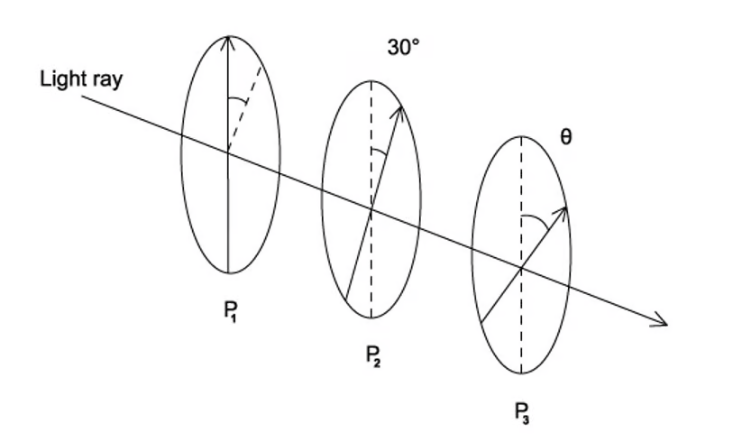
The polarising axis of each polarising film is shown by an arrow. The polarising films P1 and P2 are fixed, with their axes of polarisation at 30° to one another.
If the light emerging from the third filter has an intensity of \(13.5\ \mathrm{W\,m^{-2}}\), what is angle \(\theta\)?
A. 60°
B. 90°
C. 30°
D. 45°
Show answer and explanation
Answer: D. After the first polariser, \(I=36\ \mathrm{W\,m^{-2}}\). After P2 (at 30°), \(I=36\cos^2 30°=27\ \mathrm{W\,m^{-2}}\). For the final intensity to be \(13.5\ \mathrm{W\,m^{-2}}\), \(27\cos^2\theta=13.5\), so \(\cos^2\theta=0.5\) and \(\theta=45°\).Structured Questions
7.1 Waves: Transverse & Longitudinal - Medium
Example 1 · 7.1 SQ Medium Q1
Circular water waves are produced by vibrating dippers at points P and Q, as illustrated in Fig. 4.1.
The waves from P alone have the same amplitude at point R as the waves from Q alone. Distance PR is 44 cm and distance QR is 29 cm.
The dippers vibrate in phase with a period of 1.5 s to produce waves of speed \(4.0\ \mathrm{cm\,s^{-1}}\).
(a) Calculate the wavelength of the waves.
wavelength = ____________ cm [2]
(b) Calculate the path difference at point R of the waves from P and Q. Give your answer in terms of the wavelength \(\lambda\) of the waves.
path difference = ____________ [2]
(c) Describe the motion, if any, of the water particles at point R.
Explain your answer.
[5 marks]
Show mark scheme / model answer
- (a) Use the wave equation \(v=f\lambda\).
[1]\(\lambda=vT=4.0\times1.5=6.0\ \mathrm{cm}\).[1] - (b) Path difference \(=PR-QR=44-29=15\ \mathrm{cm}\).
[1]Number of wavelengths \(=15/6=2.5\), so path difference \(=2.5\lambda\) (or \(\tfrac{5}{2}\lambda\)).[1] - (c) The path difference is an odd number of half wavelengths, so the waves arrive with a phase difference of 180° (antiphase).
[1]This causes destructive interference,[1]so the particles at R are at rest / have no motion.[1]
[Total: 5 marks]
Example 2 · 7.1 SQ Medium Q2
A wave on the surface of a ripple tank moves from the source at the rear of the tank to the front. The graph in Fig. 1.1 shows the variation with distance \(x\) of the displacement of the surface of the water.
The solid line shows the displacement at \(t=0\) and the dashed line shows the displacement at \(t=0.154\ \mathrm{s}\).
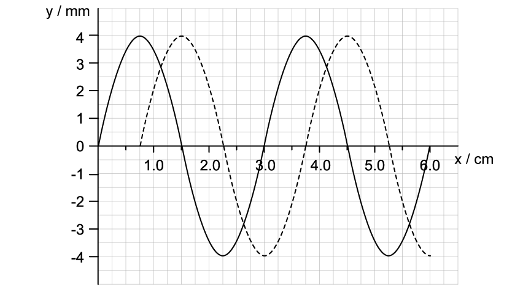
(a) Describe the difference between transverse and longitudinal waves. [2 marks]
(b) Calculate for the wave on the ripple tank:
(i) the speed; [2]
(ii) the frequency. [2]
[4 marks]
(c) The graph in Fig. 1.1 shows the motion of the water waves at a point where displacement is less than 6.0 cm.
Describe the appearance of the wave after being displaced by twice this distance. [3 marks]
(d) The initial amplitude of the ripples is 0.38 cm.
Sketch a graph of displacement against time to show the motion of the surface of the water for the first 3.0 s. [3 marks]
Show mark scheme / model answer
- (a) Transverse waves: the direction of vibration of the particles is perpendicular (at 90°) to the direction of motion of the wave / energy transfer.
[1]Longitudinal waves: the direction of vibration of the particles is parallel to the direction of motion of the wave / energy transfer.[1] - (b)(i) From the graph, the wave advances 0.75 cm in 0.154 s (a quarter of a wavelength).
[1]\(v=d/t=7.5\times10^{-3}/0.154=0.049\ \mathrm{m\,s^{-1}}\).[1] - (b)(ii) Method 1: from the graph \(\lambda=3.0\ \mathrm{cm}=0.03\ \mathrm{m}\); \(f=v/\lambda=0.049/0.03=1.6\ \mathrm{Hz}\).
[2] - (c) Any three from: amplitude decreases as energy is dissipated;
[1]frequency remains the same (it is set by the source);[1]wavelength remains the same;[1]speed remains the same.[1] - (d) The sketch must show: 5 complete waves within 3.0 s with the time axis marked to 3.0 s;
[1]the amplitude starting at 0.38 cm;[1]the amplitude gradually decreasing with time.[1]
[Total: 12 marks]
Example 3 · 7.1 SQ Medium Q3
(a) Explain what is meant by a progressive wave. [2 marks]
An elastic cord is fixed at one end and attached to a mechanical oscillator at the other end. Fig. 1.1 shows, at time \(t=0\), the shape of a section of the cord as the wave travels from left to right. W, X, Y and Z are four marked points on the cord.
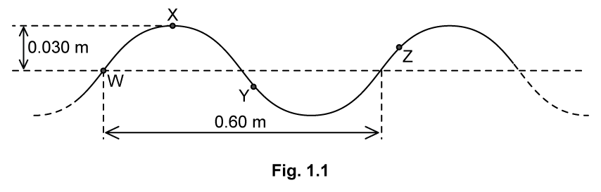
The mechanical oscillator has a steady frequency of 5.0 Hz. The wave has a wavelength of 0.60 m and an amplitude of 0.030 m.
(b) On the axes of Fig. 1.2, sketch the graph of the displacement of point X over the period \(t=0\) to 0.40 s. Add suitable scales to the axes.
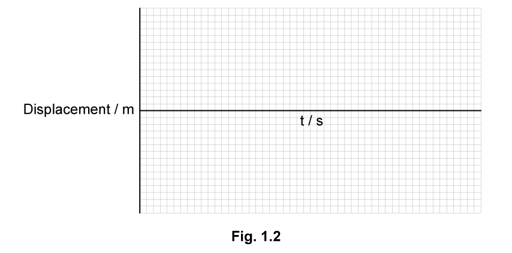
[4 marks]
(c) For time \(t=0\), state which of the points W, X, Y and Z:
(i) is instantaneously at rest; [1]
(ii) has the greatest speed. [1]
[2 marks]
(d) The speed of point W on the cord at \(t=0\) is \(0.94\ \mathrm{m\,s^{-1}}\). With the cord at its original tension, the frequency of oscillation is now doubled to 10 Hz. The amplitude is kept at 0.030 m.
Calculate the new speed of point W at \(t=0\). Explain your reasoning. [2 marks]
Show mark scheme / model answer
- (a) A progressive wave is a transfer of energy
[1]with no transfer of matter.[1] - (b) The sketch must show: a sinusoidal shape with exactly two wavelengths shown;
[1]amplitude at \(\pm0.03\ \mathrm{m}\);[1]period \(=0.2\ \mathrm{s}\) with the x-axis labelled 0.1, 0.2, 0.3 and 0.4;[1]the curve starting at \((0,\ 0.03)\).[1] - (c)(i) X is instantaneously at rest.
[1] - (c)(ii) W has the greatest speed.
[1] - (d) Frequency has doubled, so point W must move double the distance in the same time (or the same distance in half the time), so the speed doubles.
[1]New speed \(=2\times0.94=1.9\ \mathrm{m\,s^{-1}}\).[1]
[Total: 10 marks]
7.2 Transverse Waves: EM Spectrum & Polarisation - Medium
Example 4 · 7.2 SQ Medium Q1
A beam of vertically polarised monochromatic light is incident on a polarising filter, as shown in Fig. 5.1.
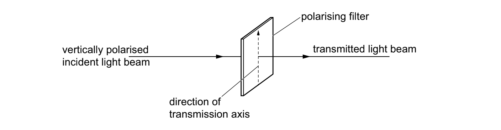
The transmission axis of the filter is initially vertical and the transmitted light beam has the same intensity as the incident light beam.
The filter may be rotated about the direction of the light beam to change the angle of the transmission axis to the vertical.
(a) State one angle of the transmission axis to the vertical that results in no transmitted light beam.
angle = ____________ [1 mark]
The filter is now positioned with its transmission axis at an angle \(\theta\) to the vertical, as shown in Fig. 5.2.
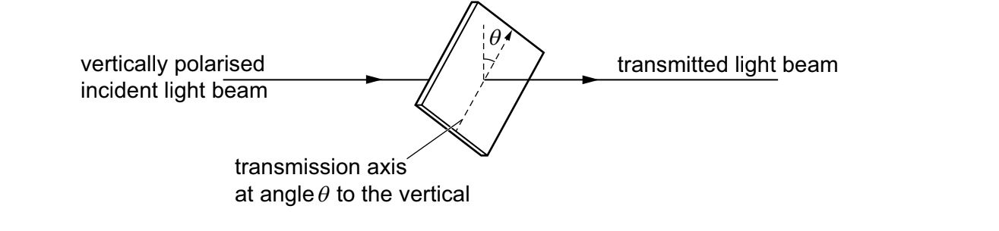
The ratio
\[\frac{\text{intensity of transmitted light}}{\text{intensity of incident light}}\]
is equal to 0.75.
(b) Calculate angle \(\theta\). [2]
(c) Calculate the ratio
\[\frac{\text{amplitude of transmitted light}}{\text{amplitude of incident light}}.\]
ratio = ____________ [2]
[4 marks]
Show mark scheme / model answer
- (a) 90° (to the vertical).
[1] - (b) Use Malus’s law: \(I/I_0=\cos^2\theta=0.75\).
[1]\(\theta=\cos^{-1}(\sqrt{0.75})=30°\).[1] - (c) Intensity is proportional to amplitude squared, so \(A/A_0=\sqrt{0.75}\).
[1]\(A/A_0=0.866\approx0.87\) (2 s.f.).[1]
[Total: 5 marks]
Example 5 · 7.2 SQ Medium Q2
Unpolarised light is passed through a pair of polarising sunglasses as shown in Fig. 1.1. The light becomes plane polarised.
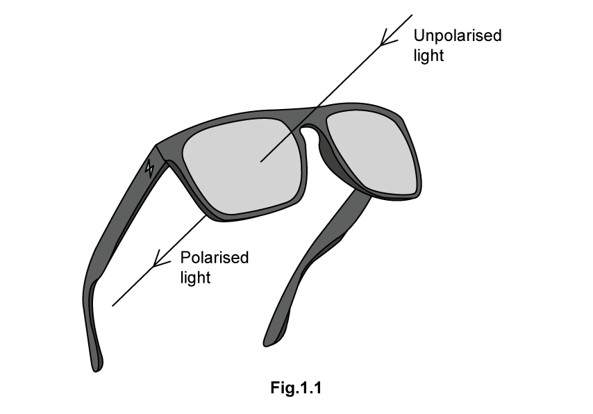
(a) Explain the difference between unpolarised and plane polarised light. [3 marks]
In an experiment to investigate polarising filters, two square filters are used.
Initially, they are placed between the source of unpolarised light and a hand-held digital light meter, as shown in Fig. 1.2. The planes of polarisation of the filters are indicated by double-headed arrows.
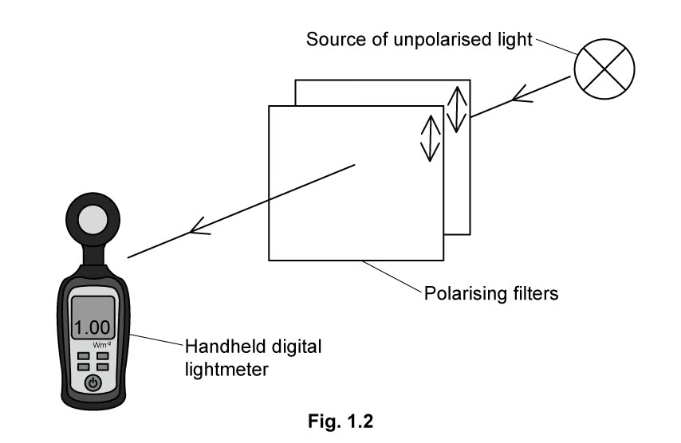
The light meter measures the intensity of radiation as \(1.00\ \mathrm{W\,m^{-2}}\).
One of the polarising filters is then rotated, as shown.
(b) Sketch a graph, using the axes as shown in Fig. 1.3, to show how the intensity of light measured by the light meter varies as the filter is rotated from 0° to 90°.
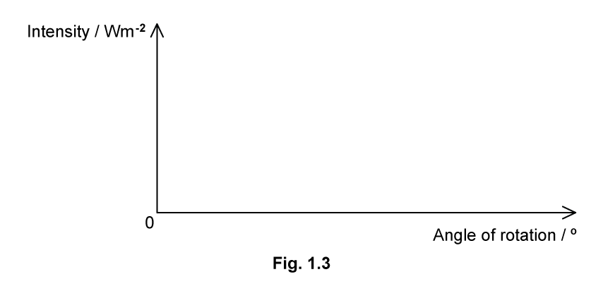
[3 marks]
Polarisation can be used to identify when some materials are under stress. Placing the material under stress causes the plane of polarisation of the light passing through the material to be rotated. The greater the stress, the greater the rotation of the plane of polarisation of the light.
A piece of transparent material under stress is positioned between two polarising filters. There is an angle of 90° between the planes of polarisation of the two polarising filters.
(c) Explain how this photograph can be used to identify areas of the material with different amounts of stress. [3 marks]
Show mark scheme / model answer
- (a) Unpolarised light vibrates / oscillates in all planes.
[1]Plane polarised light vibrates / oscillates in one plane.[1]The planes of oscillation are perpendicular to the direction of wave travel.[1] - (b) The sketch must show: correct numbers added to both axes;
[1]a single maximum at 0° and a single minimum at 90°;[1]the graph starting at \((0,\ 0.5)\) with the gradient increasing to \((90,\ 0)\).[1] - (c) Polarising filters at 90° to each other do not allow light to pass through.
[1]Rotation of the plane of polarisation (due to stress) allows light to pass.[1]Darker areas represent less stress, or brighter areas represent greater stress.[1]
[Total: 9 marks]
Example 6 · 7.2 SQ Medium Q3
Fig. 1.1 shows two ways in which a wave can be made to travel along a slinky spring.
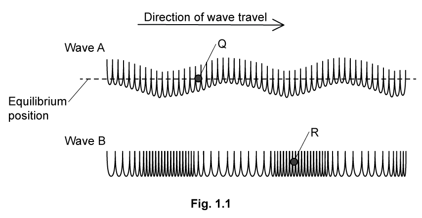
(a) Use arrows to show how points Q and R will move next as the two waves move to the right. [2 marks]
(b) Use the diagram in Fig. 1.1.
(i) State which wave in Fig. 1.1 can be used to model an electromagnetic wave. [1]
(ii) Hence explain why it is important to correctly align a radio antenna in order to receive the strongest signal. [2]
[3 marks]
Light from a filament lamp is viewed through two polarising filters A and B, as shown in Fig. 1.2. The direction of plane polarisation is indicated on each filter using a double-headed arrow.
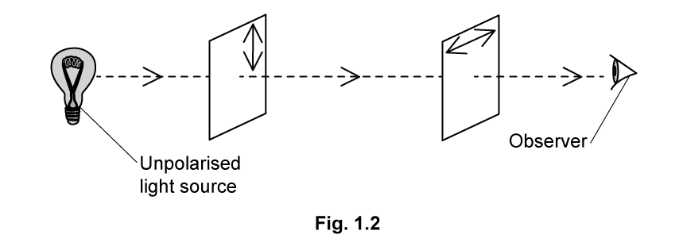
(c) Explain why the observer cannot see light from the filament lamp. [2 marks]
(d) Polaroid sunglasses are sold as sporting equipment to people who fish, sail and kayak.
Explain how polaroid sunglasses can be used to more clearly see objects such as fish, rocks and other obstacles which are under the surface of water, by a person who is above the water. [3 marks]
Show mark scheme / model answer
- (a) Q moving downwards.
[1]R moving to the left.[1] - (b)(i) Wave A can be used to model electromagnetic waves.
[1] - (b)(ii) Transmitted radio waves are polarised.
[1]Antennae must be aligned to the same angle / plane of polarisation.[1] - (c) Light passing through polarising filter A is vertically polarised.
[1]Only light in the horizontal plane / horizontally polarised light will pass through polarising filter B.[1] - (d) The glasses minimise / reduce glare from sunlight.
[1]Reflected light from the surface of the water undergoes partial plane polarisation.[1]The glasses’ polarising filter absorbs light in one plane of polarisation, therefore reducing glare.[1]
[Total: 10 marks]
Chapter checklist
Original question PDFs
- 7.1 Waves: Transverse & Longitudinal - MC Easy
- 7.1 Waves: Transverse & Longitudinal - MC Medium
- 7.1 Waves: Transverse & Longitudinal - MC Hard
- 7.1 Waves: Transverse & Longitudinal - SQ Medium
- 7.2 Transverse Waves: EM Spectrum & Polarisation - MC Easy
- 7.2 Transverse Waves: EM Spectrum & Polarisation - MC Medium
- 7.2 Transverse Waves: EM Spectrum & Polarisation - MC Hard
- 7.2 Transverse Waves: EM Spectrum & Polarisation - SQ Medium